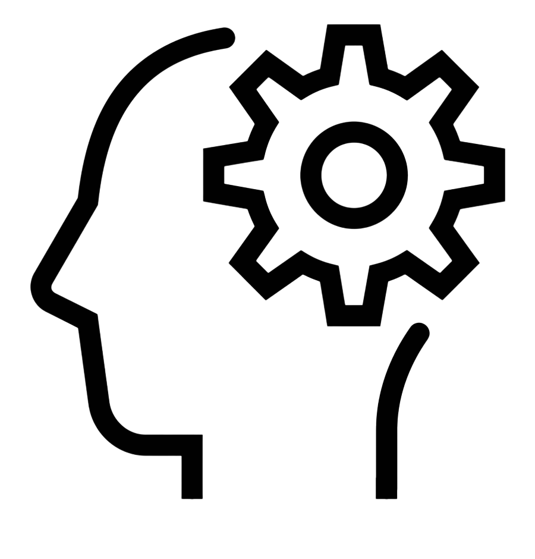

Mes qualités :
Curieux

Passioné
Passioné

Esprit d'équipe

Créatif
Je m'appelle Elliot GUIBERTEAU, j'ai 22 ans et je suis actuellement étudiant en seconde année en BTS SIO option Slam à l'école IRIS à Strasbourg. Depuis quelques années, je me suis intéressé à l'informatique grâce à des amis étant dans ce domaine. Je me suis donc tourné vers l'informatique en faisant tout d'abord un BAC STI2D (sciences et technologies de l'industrie et du développement durable) option SIN (système informatique et numérique), puis j'ai continué en commençant un BTS SIO (Services informatiques aux organisations) jusqu'aujourd'hui.
Grâce à mes expériences et à mes formations, j'ai acquis un certain savoir et de compétences :
Lors de mes formations, j'ai pû réaliser divers stages m'offrant de l'expérience.
En 3ème j'avais réalisé un stage d'une durée de 1 semaine, lors de ce stage j'ai assistais aux journées d'un administrateur réseaux.
Ensuite j'ai fait un BAC STI2D, durant la seconde année de ce BAC j'ai été amené à faire un projet de groupe dans lequel nous avions proposé une solution applicative pour des écrans, le nom du projet était écran intélligent dans lequel nous avons codé en arduino.
Puis lors de ma 1ère année en BTS SIO, j'ai réalisé un stage de 5 semaines auquel j'ai effectué du développement de Webdesign et j'ai fait de la gestion de support.
Dernièrement lors de ma seconde année en BTS SIO, j'ai effectué un stage de 5 semaines auquel j'ai dû adapter un projet symfony à une version plus récente, à gérer les erreurs rencontrées et à adapter des librairies.
Actuellement je vais continuer mes études après mon BTS en faisant soit une licence professionnelle soit un bachelor. Puis par la suite surêment continuer jusqu'à BAC +5
J'aimerai devenir un développeur full stack.